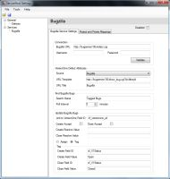

VersionOne Integration for Bugzilla
Introduction
The VersionOne Integration for Bugzilla creates defects in VersionOne based on bugs found in Bugzilla. Using this integration, your organization can manage and triage bugs reported by customers and promote them to VersionOne once you determine a fix is necessary.
Contents
Description
Once the integration is installed and configured, Bugzilla users can specify which bugs require engineering attention and they will automatically appear as Defects in the VersionOne repository. Additionally, when the defect is closed in VersionOne, the integration updates Bugzilla to reflect this change.
This integration supports multiple modes of operation.
- Assign a Bug: With this approach, bugs that require attention are assigned to a specific user in Bugzilla. This assignment is used to determine when to create Defects in VersionOne.
- Tag a Bug: With this approach bugs that require attention are identified using custom fields on the bugs. The value of the custom field is used to indicate when to create Defects in VersionOne.
The following sequence diagram illustrates how the integration interacts with Bugzilla and VersionOne:
title Bugzilla Integration Sequence Integration->Bugzilla: Bugs for VersionOne? activate Integration activate Bugzilla Bugzilla-->Integration: No deactivate Bugzilla Integration->VersionOne: Any recently closed defects? activate VersionOne VersionOne-->Integration: No deactivate VersionOne deactivate Integration Bugzilla User->Bugzilla: Assign/Tag Bug Integration->Bugzilla: Bugs for VersionOne? activate Integration activate Bugzilla Bugzilla-->Integration: Yes deactivate Bugzilla activate Integration Integration->VersionOne: Create Defect deactivate Integration Integration->VersionOne: Any recently closed defects? activate VersionOne VersionOne-->Integration: No deactivate VersionOne deactivate Integration VersionOne User->VersionOne: Close Defect Integration->Bugzilla: Bugs for VersionOne? activate Integration activate Bugzilla Bugzilla-->Integration: No deactivate Bugzilla Integration->VersionOne: Any recently closed defects? activate VersionOne VersionOne-->Integration: Yes deactivate VersionOne Integration->Bugzilla: Close Bug deactivate Integration
System Requirements
Operating System:
- The ServiceHost executable can be ran on any Windows operating system that supports .NET Framework 4.5.1.
VersionOne:
- 7.3 and higher, all editions.
Bugzilla:
- Versions 4.2 and 4.4, Linux recommended. Previous versions of Bugzilla may continue to work, but are no longer supported by VersionOne.
Bugzilla must be running in the Apache Web Server. Bugzilla running in IIS is not supported.
Your Bugzilla instance must support RPC connections. This may require some optional modules including, but not limited to, SOAP-Lite, Test-Taint, and JSON-RPC. If these modules have dependencies, you will need to install those too. Refer to the Bugzilla documentation for your release for exact details and instructions on how to install these modules.
Download
The latest version of the integration is available in the VersionOne Application Catalog.
Upgrade
If you already have the Bugzilla running in your environment, you will need to backup the existing integration before installing this current version. Also, remember to upgrade the VersionOne integration scripts that run on your Bugzilla server.
Installation
These installation instructions assume that Bugzilla is already installed, configured, and working properly.
- Determine Installation Location.
The integration can be installed on any server with network access to both VersionOne and Bugzilla. Exact placement should be determined by your internal software management requirements. The integration server must meet the system requirements stated above.
- Extract the files.
Download the integration using the link above and extract it into a folder of your choice.
- Configure
the integration.
Configuration for the integration is a 3 step process:
- Start the integration.
Open up the command prompt, navigate to your installation folder, and run the following command:
VersionOne.ServiceHost.exe
If you have configured your system properly, you should see several [Info] messages followed by a [Startup] message. - Test the integration.
To ensure the integration is working, perform the following steps:
- Create a bug in Bugzilla
- Set the appropriate state in order for the bug to move to VersionOne
- Verify that the bug appears in VersionOne as a defect
- Close the defect in VersionOne
- Verify that the Bugzilla bug has been updated as expected
- Shut down the service host by pressing "Q" in the console window
- Install the integration as a Windows Service (optional).
While not required, you may configure the integration to run as a Windows Service using the following command from the console window:
VersionOne.ServiceHost.exe --install
This command installs the integration service so it will will run under the account NT AUTHORITY\Local Service. Local Service must be given access privileges to the directory where the integration was installed so it can store its state and write to log files.Follow these steps to change the security on the installation directory:
- Right click the installation folder from Windows Explorer.
- Select Properties.
- Select the Security tab.
- Click the Add button.
- Enter Local Service and click OK.
- Click the Allow checkbox for the Full Control row.
- Click OK to save the changes.
Configuration
Configure Bugzilla
This section describes how to modify your Bugzilla instance for use with VersionOne. Before you begin you need to know your Bugzilla version number and you need to decide if you want to Assign or Tag the bugs you want visible in VersionOne.
- Copy the VersionOne scripts to your Bugzilla instance.
The integration utilizes the extension features in Bugzilla so you need to copy the V1 directory to your Bugzilla extension directory.
Name Location Config.pm Place this file in the extensions/V1 folder. On Linux, this script must be marked as executable. Extension.pm Place this file in the extensions/V1 folder. On Linux, this script must be marked as executable. TestV1Service.pm Place this file in the extensions/V1 folder. On Linux, this script must be marked as executable. V1.pm Place this file in the extensions/V1/lib folder. On Linux, this script must be marked as executable. /var/www/html/ + Bugzilla + contrib + data + docs - extensions - V1 <== Config.pm, Extension.pm, and TestV1Service.pm files + lib <== V1.pm file + graphs + images ... - Verify the proper installation of the VersionOne scripts.
To verify that the script are functioning properly, run the
TestV1Service.plscript passing the fully qualified Bugzilla URL:perl TestV1Service.pl http://bugserver/Bugzilla/xmlrpc.cgiIf your Bugzilla instance requires credentials, you must also provide them when running the test:
perl TestV1Service.pl http://bugserver/Bugzilla/xmlrpc.cgi administrator@example.com password - Select or Create a Bugzilla User.
The integration requires a valid Bugzilla User Id and a Password in order to connect. This user must have sufficient rights to accept work and modify Bugs.
- The next step depends the approach for pushing Bugs to
VersionOne.
- Assigned
If you choose to push bugs by assigning them to the user identified in step 2, proceed to the next step.
- Tagged
If you want to push bugs to VersionOne using a Custom Field, you need to do the following:
- Create the Custom field. It is recommended that you use a drop-down field and limit the values.

- Populate the field with the desired values.

- Create the Custom field. It is recommended that you use a drop-down field and limit the values.
- Assigned
- Create a 'Saved Search' to select the bugs you want pushed to VersionOne.
- Assigned
Using this approach, the easiest Filter is based on who the Bug is assigned to ("Assignee is {user}") and Status (i.e. "NEW")

- Tagged
Using this approach, the easiest Filter is based on the value of the Custom Field.

- Determine how to prevent Bugs from being pushed more than once.
This decision is based on your Search and how you want Bugs pushed to VersionOne.
- Assigned
Using this approach, the simplest option is to change the Status. To do this you need to Accept the Bug
- Tagged
Using this approach, the simplest option is to change the value of the custom field. To do this you need to know the value you want set in the custom field.
- Assigned
- Do you want the a URL to the VersionOne Defect to appear in Bugzilla?
If so, you'll need to create a custom field in Bugzilla.


It's beyond the scope of this document to describe how to create Filters in Bugzilla , but here are some filter ideas


It is recommended that you create the filter using the same credentials used by the integration.

Configure VersionOne
Skip this step if you are configuring a VersionOne Team Edition instance.
- Add "Bugzilla" to the VersionOne Global Source list.

- Determine where to store the Bugzilla ID.
The integration needs a text field in VersionOne to store the Bugzilla identifier. By default this is the Reference field. If you are already using this field, you'll need to create a custom text field and note the name

Configure the Integration
To configure the Bugzilla integration, run the ServiceHost configuration tool
ServiceHostConfigTool.exe
The following section describes how to configure your Bugzilla integration using the use the configuration tool.
- On the General tab specify your VersionOne connection details.

The following table describes the fields on this tab:
Field Description Server URL This is the URL to your VersionOne server Username VersionOne user that will create defects Password Password for the specified user Use Windows Integrated Authentication Check this box if you VersionOne server is configured to use Windows Integrated Authentication If there's a proxy between this machine and the VersionOne instance, you'll also need to configure the following settings:
Field Description Use Proxy For Connection Determines if the integration tries to connect through a Proxy Proxy URL This is the URL to your Proxy Server Proxy Username The username that will get you past this proxy Proxy Password The password for the Proxy Username Proxy Domain Name of Proxy Domain - Once the VersionOne parameters are specified, press Verify button to continue.
- On the Defects tab specify the VersionOne field that will hold the Bugzilla ID.

The following table describes the fields on this tab:
Field Description Reference Field Name Defect field used to hold Bugzilla ID. By default this is the Reference field. Disabled Check this box to disable polling VersionOne for Defect updates. - On the Bugzilla tab specify your Bugzilla connection details and the Bug transfer behavior.
This tab changes slightly depending on whether you are assigning or tagging Bugs.
Assign Tag 
 - Configure the Bugzilla connection (Connection Parameters)
Field Description Disabled Check this box if you want to disable polling Bugzilla for new Bugs Bugzilla URL Fully qualified URL to your Bugzilla instance Don't forget to specify the script filename
Username Valid Bugzilla user. This user must be able to see and update Bugs in the appropriate projects Password Password for specified user - Click Verify to ensure the connection parameters are correct.
- Configure how bugs are identified and how they are linked between Bugzilla and VersionOne (General Parameters)
Field Description Search Name Name of the Search used to locate Bugs to be created in VersionOne Bug URL Template Template for URL to access specific Bug in Bugzilla. #key# is replaced with the Bugzilla Bug ID. This field is used to create links from VersionOne to Bugzilla Bug URL Title This field is the Link title in VersionOne. Source Select the VersionOne Source to use for Bugzilla. VersionOne Team Edition contains a Source value of "External System"
Defect List Field Id Custom Field in Bugzilla used to hold VersionOne URL. Poll Interval Determines how frequently the integration polls Bugzilla looking for Bugs. - Configure how Bugzilla Bugs are updated after Defect creation and closure in VersionOne.
Field Description Create Accept Check this box if you want the integration to accept a Bug once the Defect is created in VersionOne. If you are assigning Bugs to VersionOne, you most likely want this checked.
Close Accept Check this box if you want the integration to accept a Bug once the VersionOne Defect is closed. Create Resolve Value Value for Bugzilla 'Resolve' attribute after creating the VersionOne Defect. Close Resolve Value Value for Bugzilla 'Resolve' attribute after the VersionOne Defect is closed. - Select the appropriate mode of operation (Assign/Tag)
- Assign
The following fields are available when you are assigning Bugs to VersionOneField Description Create Reassign Value Identifier for the Bugzilla user to assign a Bug after a Defect is created in VersionOne. Close Reassign Value Identifier for the Bugzilla user to assign a Bug after the VersionOne Defect is closed. - Tag
The following fields are available when you are tagging Bugs you want in VersionOneField Description Create Field ID Name of the Bugzilla Custom Field to update after a Defect is created in VersionOne. Create Field Value Value to set in "Create Field ID" after a Defect is created in VersionOne. Closed Field ID Name of the Bugzilla custom field to update after a the VersionOne Defect is closed. Closed Field Value Value to set in "Closed Field ID" after a the VersionOne Defect is closed.
- Assign
- Configure the Bugzilla connection (Connection Parameters)
- Map your Projects Values.
Project Mapping allows you to specify where Defects are created in VersionOne. The algorithm for selecting a project is as follows: First, the integration looks for the Bugzilla Product Name in the map. If it exists, the defect is created in the corresponding VersionOne Project. If the Bugzilla Product Name is not found, the integration attempts to find a VersionOne Project with the same name. If found, the integration creates the defect in the VersionOne project with a matching name. If it cannot find a VersionOne project with a name that matches the Bugzilla Product, the integration will create the defect in the root level node of the VersionOne Project tree or in the first Project in the list if there are multiple top level nodes.

To add a Project mapping you need to do the following:
- Click on the Project and Priority Mapping tab
- In the Project Mapping grid, select a VersionOne Project value from the dropdown
- Supply the corresponding Bugzilla Product name.
To remove a mapping: - Select the desired row.
- Click the Delete current row button
- Map your Priority Values.
Priority mapping allows you to configure how the VersionOne Defect priority value is set based on the Bugzilla Priority value. The algorithm for mapping is simple, if the Bugzilla Priority value is in the mapping, the VersionOne defect value is set to the mapped value. If the Bugzilla Priority value is not found, the VersionOne defect value is not set.
To add a Priority mapping you need to do the following:
- Click on the Project and Priority Mapping tab
- In the Priority Mappings grid, select a VersionOne Priority value from the dropdown
- Supply the corresponding Bugzilla Priority value name.
To remove a mapping: - Select the desired row.
- Click the Delete current row button
- Save your changes and exit the program.


{kind=link}